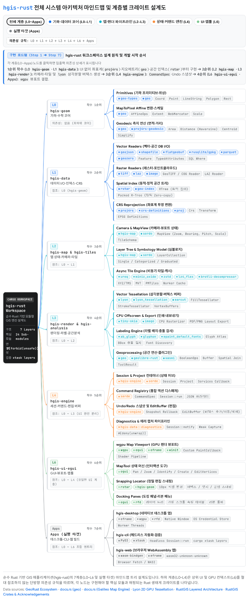
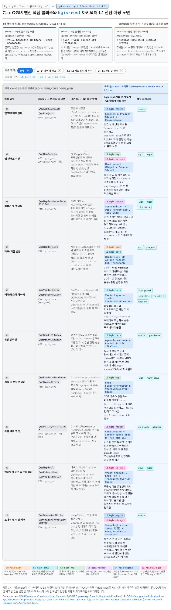
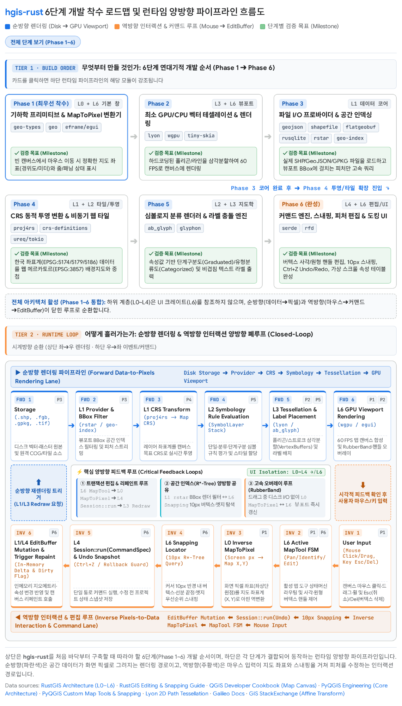
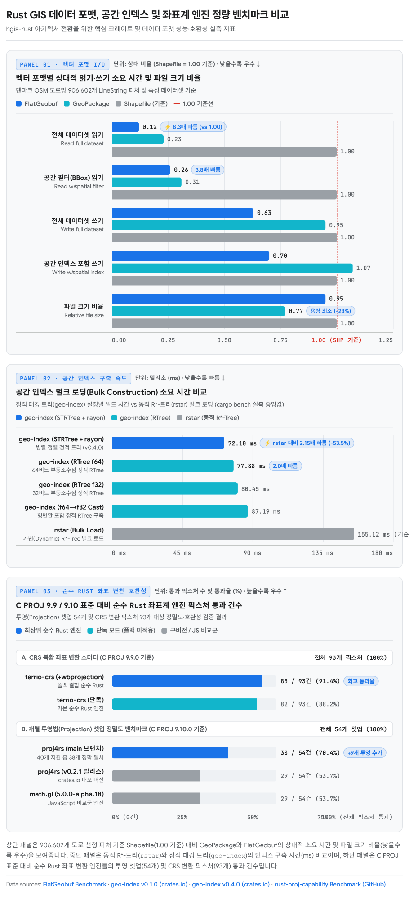

C++ QGIS 엔진에서 순수 Rust GIS 아키텍처로의 재설계 도면 및 단계별 구축 로드맵
C++ 기반의 QGIS 엔진(qgis_core, qgis_gui)을 사용하던 기존 애플리케이션(hgis.git)을 순수 Rust 기반의 애플리케이션(hgis-rust.git)으로 전환할 때 직면하는 가장 큰 장벽은, QGIS가 단일 프레임워크로 제공하던 데이터 프로바이더(QgsDataProvider), 공간 인덱스, 투영 변환기(QgsCoordinateTransform), 캔버스 렌더러(QgsMapCanvas), 인터랙션 툴(QgsMapTool), 편집 버퍼(QgsVectorLayerEditBuffer)가 Rust에는 단일 거대 엔진으로 존재하지 않는다는 점입니다1. (참고: 질문에 제시된 두 GitHub 저장소 URL인 hgis.git과 hgis-rust.git은 현재 외부에서 접근할 수 없는 상태이므로5, 본 설계도는 표준 C++ QGIS API 아키텍처에서 2026년 기준 검증된 오픈소스 순수 Rust GIS 아키텍처인 opengeos/RustGIS, galileo, maplibre-rs, 그리고 GeoRust 생태계로 전환하는 엔지니어링 표준을 기준으로 작성되었습니다7.)
Rust로 GIS 앱을 처음부터 설계할 때의 핵심 원칙은 단방향 계층형 Cargo 워크스페이스(L0~L6) 분리와 명령 중심(Command-Driven) 상태 관리입니다10. C++ QGIS에서는 QObject 부모-자식 트리와 QGraphicsView 기반의 QgsMapCanvas가 데이터 생명주기와 화면 갱신을 강하게 결합하지만1, Rust에서는 소유권(Ownership)과 빌림 검사기(Borrow Checker) 규칙 때문에 UI 위젯이 레이어 데이터를 직접 소유하거나 변경하려 하면 순환 참조와 생명주기 충돌에 빠지기 쉽습니다2. 따라서 하위 기하학 및 데이터 계층(L0~L4)은 UI 라이브러리(egui, wgpu, winit)에 의존하지 않도록 격리하고, 모든 상태 변경은 고유 ID와 JSON 파라미터를 가진 커맨드(Session::run)를 통해서만 실행되도록 설계해야 합니다10.
무엇부터 만들어야 할지 막막할 때는 바텀업(Bottom-Up) 기반 구축과 수직 관통(Vertical Slice) 렌더링 검증을 결합한 6단계 순서로 진행해야 합니다. 가장 먼저 1단계(L0)에서 외부 의존성이 거의 없는 순수 수학 계층인 2D 좌표(Coord), 바운딩 박스(Extent), 그리고 지도 좌표를 화면 픽셀로 변환하는 아핀(Affine) 변환기(MapToPixel)를 만듭니다3. 이어서 2단계(L3 최소 파이프라인)에서 파일 입출력보다 먼저 메모리상의 하드코딩된 다각형 하나를 lyon으로 삼각분할(Tessellation)하여 wgpu 또는 tiny-skia 화면에 띄움으로써 시각적 피드백 루프를 확보합니다10. 그 위에 3단계(L1 데이터 I/O 및 rstar/geo-index 공간 인덱싱)16, 4단계(L1/L2 proj4rs 좌표계 투영 및 비동기 배경 타일)10, 5단계(L2/L3 심볼로지 분류 렌더러 및 라벨 충돌 회피)20, 6단계(L4/L6 MapTool 상태 머신, 스내핑, 피처 편집 버퍼 및 Undo/Redo 스택)를 순차적으로 쌓아 올려야 합니다10.

1. 마인드맵 트리 상세 명세: hgis-rust Cargo 워크스페이스 계층 구조 (L0~L6)
C++에서 qgis_core와 qgis_gui라는 거대한 동적 라이브러리(.dll / .so)에 의존하던 구조를 대체하기 위해24, hgis-rust는 루트 Cargo.toml 아래에 역할별로 분리된 다수의 내부 크레이트(Crate)를 두는 다층 워크스페이스 아키텍처로 설계해야 합니다8. opengeos/RustGIS의 아키텍처 설계에서 입증되었듯, 하위 계층이 상위 계층이나 UI 프레임워크를 참조하지 않는 단방향 의존성 규칙(L0 ← L1 ← L2 ← L3 ← L4 ← L6)을 강제하면 엔진의 모든 기능을 UI 없이도 단위 테스트할 수 있고, 동일한 코어를 데스크톱(hgis-desktop), CLI(hgis-cli), 웹어셈블리(hgis-web), 파이썬 패키지(PyO3)로 동시에 빌드할 수 있습니다10.
위 마인드맵 설계도의 7개 주가지(Primary Branches)와 각 계층 내부의 서브 모듈 트리, 구현해야 할 핵심 Rust 타입, 그리고 매핑되는 외부 크레이트의 전체 명세는 아래 표와 같습니다.
| 계층 및 내부 크레이트 | 마인드맵 2차 가지 (서브 모듈) | 마인드맵 3차 리프 (구현할 핵심 구조체·트레이트 및 역할) | 채택할 주요 외부 크레이트 |
|---|---|---|---|
| L0: hgis-geom (기하·수학 코어)10 | primitives (기하 기본형) extent (경계 사각형) transform (화면-지도 변환) measures (측지학 연산) | Coord<f64>, Point, LineString, Polygon, MultiPolygon, Geometry 열거형12 BoundingBox (min_x, min_y, max_x, max_y 교차/포함 판정)10 MapToPixel (2D 아핀 정방향·역방향 행렬 변환기)3 GeodesicArea, Haversine, Bearing, 축척(Scale) 계산기10 | geo-types, geo12 |
| L1: hgis-data (데이터 I/O·인덱스·CRS)10 | feature & schema (데이터 모델) provider (데이터 공급자 트레이트) io_vector (벡터 파일/DB 리더) io_raster (래스터/점군 리더) spatial_index (공간 인덱스) crs (좌표계 투영 변환) | Feature (FeatureId, Option<Geometry>, Vec<AttributeValue>), FieldSchema3 trait VectorDataProvider, trait RasterDataProvider, FeatureRequest2 뷰포트 단위 In-place 스트리밍 리더(>100,000 피처 대응) 및 인코딩 디코더17 타일/스트라이프 단위 GeoTIFF 블록 리더 및 LiDAR 포인트 샘플러2 동적 편집용 R*-Tree 및 읽기 전용 고속 패킹 STR-Tree/KD-Tree18 EPSG 코드 및 PROJ 문자열 기반 실시간 좌표계 변환 파이프라인10 | geojson, shapefile, dbase, encoding_rs, flatgeobuf, rusqlite, parquet, geoarrow-rs, geozero, tiff, laz, rstar, geo-index, proj4rs, crs-definitions (선택: proj, gdal)7 |
| L2: hgis-map & hgis-tiles (맵 상태·카메라·심볼·타일)10 | camera (뷰포트 카메라) layer_tree (레이어 트리) symbology (심볼·렌더러 모델) tile_schema (타일 그리드) tile_cache (비동기 타일 워커) | Camera / MapView (center, zoom/lod, bearing, pitch, Crs)33 LayerTreeGroup, LayerNode, 가시성, 불투명도, BlendMode, 드로잉 우선순위21 enum FeatureRenderer (Single, Categorized, Graduated), Symbol, Vec<SymbolLayer>21 TileSchema (XYZ/TMS/WMS 타일 인덱스 계산), PMTiles/MBTiles/MVT 리더10 백그라운드 워커 스레드 HTTP 패치 및 메모리/디스크 타일 캐시10 | ureq, image, galileo-mvt, serde, miniz_oxide, ruzstd, lz4_flex8 |
| L3: hgis-render & hgis-analysis (렌더링·라벨·공간분석)10 | tessellation (삼각분할기) backend_gpu (GPU 씬 준비기) backend_cpu (오프스크린/인쇄) labeling (자동 라벨 배치) geoprocessing (공간 분석 도구) | FillTessellator, StrokeTessellator → VertexBuffers<GpuVertex, u32> 변환14 UI 독립적 wgpu 버텍스/인덱스/유니폼 버퍼 및 텍스처 바인드 그룹 생성9 헤드리스 PNG/PDF 및 인쇄 조판(PrintLayout)용 2D CPU 래스터라이저10 폰트 글리프 아틀라스 생성 및 화면 공간 R-Tree 기반 라벨 충돌 감지/숨김20 BooleanOps (교차·합집합·차집합), 다각형 버퍼, 공간 조인, 클러스터링(DBSCAN)12 | lyon, earcut, wgpu, tiny-skia, ab_glyph, glyphon, geo, geo-buffer12 |
| L4: hgis-engine (세션·커맨드·편집 버퍼)10 | session & project (컨테이너) command_registry (명령 엔진) edit_buffer & undo (트랜잭션) diagnostics (진단·오류 기록) | Session, Project (맵·레이어 저장소, 선택 피처 집합, .hgis 직렬화)10 CommandSpec (ID, 라벨, 단축키, JSON 파라미터, 활성화 조건), Session::run10 EditBuffer (버텍스 추가·이동·삭제 임시 버퍼) 및 상태 스냅샷 기반 Undo/Redo 스택4 UI 독립적 유계(Bounded) 세션 로그, 데이터 손실 알림(notify/warn), 약한 요청 캡처10 | serde, serde_json15 |
| L6: hgis-ui-egui (GUI·뷰포트·맵툴·스내핑)10 | map_viewport (GPU 맵 위젯) map_tools (인터랙션 상태 머신) overlays (고무밴드·버텍스 핸들) snapping (스내핑 탐색기) panes & ribbon (도킹 UI) | egui 커스텀 PaintCallback을 통한 wgpu 맵 서피스 합성 및 입력 이벤트 수집10 trait MapTool / 열거형 상태 머신 (Pan, Zoom, Identify, Measure, Create, EditVertices)1 RubberBand (임시 폴리곤/라인) 및 버텍스 편집 핸들(사각형 이동 핸들, 원형 중점 추가 핸들)1 SnappingLocator (기본 10px 픽셀 반경 내 버텍스·끝점·선분 우선순위 탐색 및 마젠타 마커)22 워크플로우 리본 탭, 레이어 트리 패널, 가상 스크롤(Virtual Scroll) 속성 테이블(Ctrl+T)11 | egui, eframe, winit, rfd, epaint_default_fonts10 |
| Apps & Tooling (실행 타겟 및 검증)10 | hgis-desktop (네이티브 앱) hgis-cli (명령줄 자동화) hgis-web (웹어셈블리) xtask (아키텍처 CI 검증) | Windows, macOS, Linux용 단일 실행 바이너리 진입점10 GUI 없이 Session::run 커맨드와 공간 분석 스크립트를 실행하는 헤드리스 CLI10 wasm32-unknown-unknown 타겟 기반 브라우저 실행 앱10 cargo xtask layers (하위 계층의 UI 참조 위반 검사) 및 포맷/린트 자동화10 | wasm-bindgen, pyo3 (Python 확장 시)8 |
L0~L1: 기하학 코어(hgis-geom)와 데이터 공급자(hgis-data) 설계 상세
가장 밑바닥인 L0(hgis-geom)는 파일 포맷이나 그래픽스 API를 전혀 모르는 순수 수학 계층입니다10. geo-types가 제공하는 기본 도형(Point, LineString, Polygon 등) 위에 geo 크레이트의 공간 관계 연산(DE-9IM 위상 관계, Contains, Intersects, ConvexHull, Centroid)과 타원체 측지 계산(GeodesicArea, Haversine 거리)을 결합합니다12.
그 바로 위인 L1(hgis-data)은 QGIS의 QgsDataProvider 계층을 대체합니다2. QGIS에서 QgsVectorLayer가 데이터를 직접 소유하지 않고 OGR, PostGIS, 메모리 프로바이더에 위임하듯2, hgis-data 역시 VectorDataProvider 트레이트를 정의하여 다양한 파일 포맷을 추상화합니다. 소규모 데이터는 geojson, csv, calamine(엑셀/ODS 스프레드시트)으로 파싱하고15, 레거시 Shapefile은 shapefile 및 dbase 크레이트로 읽되 .cpg 사이드카 파일과 encoding_rs 피처를 연동하여 한국어(CP949/EUC-KR) 및 동아시아 다국어 속성값이 깨지지 않도록 처리합니다17. 특히 피처 수가 100,000개를 초과하거나 파일 크기가 32 MiB를 넘는 대용량 파일(FlatGeobuf, GeoPackage, GeoParquet, Shapefile)은 파일 전체를 메모리에 적재하지 않고, 파일 내부의 공간 인덱스(FlatGeobuf의 패킹된 R-Tree, GeoPackage의 SQLite R-Tree, GeoParquet의 Row Group 바운딩 박스 커버링)나 인메모리 인덱스(rstar, geo-index)를 통해 현재 화면 뷰포트(BoundingBox)에 걸치는 피처만 실시간으로 스트리밍(In-place reading)하도록 설계합니다17.
L2~L3: 맵 상태·심볼로지(hgis-map)와 렌더링·라벨링 파이프라인(hgis-render) 설계 상세
L2(hgis-map, hgis-tiles)는 화면에 무엇을 어떤 스타일로 배치할지 결정하는 선언적 상태 계층입니다10. Camera 구조체는 평면 웹 메르카토르 뷰뿐만 아니라 회전(bearing), 기울기(pitch: 0°~85°), 3D 지구본(Globe) 투영 상태를 관리합니다34. 심볼로지 시스템은 QGIS의 렌더러 계층 구조를 그대로 수용하여 레이어당 하나의 FeatureRenderer(SingleSymbol, Categorized, Graduated)를 두고, 각 Symbol 내부에 하단(Index 0)부터 상단으로 차례대로 그려지는 Vec<SymbolLayer> 스택을 둡니다21. 이 스택 구조를 통해 굵은 어두운 선(Index 0) 위에 가는 밝은 선(Index 1)을 얹어 도로 외곽선(Cased Line) 효과를 내거나, 단색 채우기 위에 해칭 패턴을 겹치는 고급 지도학 스타일링과 표현식 기반의 데이터 정의 오버라이드(Data-Defined Overrides)를 구현할 수 있습니다21.
L3(hgis-render, hgis-analysis)는 L2의 스타일 규칙과 L1의 기하학 데이터를 받아 실제 그래픽 프리미티브로 변환합니다10. RustGIS와 maplibre-rs, galileo의 설계를 결합하여8, 실시간 대화형 맵 뷰포트는 lyon 크레이트(FillTessellator, StrokeTessellator)로 폴리곤과 스트로크를 삼각형 정점/인덱스 버퍼(VertexBuffers)로 테셀레이션한 뒤 wgpu를 통해 GPU에서 직접 렌더링합니다9. 반면 GUI 없이 실행되는 CLI 내보내기나 고해상도 인쇄 조판(PrintLayout의 PDF/PNG 출력)은 순수 Rust CPU 2D 렌더러인 tiny-skia가 담당하는 이원화 구조를 취합니다10. 라벨링 엔진은 ab_glyph와 glyphon으로 폰트 글리프를 래스터화하고, 화면 픽셀 공간에서 라벨 바운딩 박스들의 충돌을 검사하여 우선순위(priority: 0~10)가 낮은 겹침 라벨을 자동으로 숨깁니다15.
L4~L6: 커맨드 엔진(hgis-engine)과 프론트엔드 UI(hgis-ui-egui) 설계 상세
L4(hgis-engine)는 앱의 모든 상태 변경을 통제하는 세션 및 트랜잭션 계층입니다10. 리본 메뉴 버튼 클릭, 단축키 입력, 스크립트 실행, 플러그인 호출 등 모든 동작은 고유 ID와 파라미터 명세를 가진 CommandSpec으로 정의되어 Session::run을 통해 디스패치됩니다10. 프로젝트나 레이어 데이터를 변경하는(Mutating) 커맨드는 실행 직전에 자동으로 상태 스냅샷을 생성하여 Undo 스택에 푸시하고, 실행 중 에러나 패닉이 발생하면 즉시 스냅샷으로 롤백합니다10.
L6(hgis-ui-egui)는 유일하게 egui, eframe, winit, rfd 등 UI 및 윈도우 크레이트에 의존하는 최상위 프론트엔드 계층입니다10. 중앙 맵 뷰포트 위젯은 마우스 및 키보드 이벤트를 받아 활성 MapTool 상태 머신으로 전달하고, 드래그 중인 고무밴드(RubberBand)나 선택된 피처의 정점 편집 핸들(사각형 버텍스 이동 핸들, 원형 중점 추가 핸들), 그리고 10픽셀 허용오차 내의 스내핑 마젠타 마커를 오버레이로 즉각 렌더링합니다1.
2. QGIS C++ 엔진(qgis_core / qgis_gui)과 Rust 아키텍처 1:1 매핑 설계
C++ 기반의 hgis.git 코드를 hgis-rust.git으로 포팅할 때 가장 흔히 범하는 실수는 C++의 클래스 상속 구조(class MyTool : public QgsMapTool)와 포인터 공유 방식을 Rust에 그대로 번역하려는 것입니다1. QGIS는 Qt의 메타 오브젝트 컴파일러(MOC)를 통한 시그널/슬롯(signal/slot)과 부모-자식 포인터 트리에 의존하지만2, Rust에서는 이를 데이터 지향 구조체(Data-Oriented Structs), 열거형 상태 머신(Enum State Machines), 트레이트 다형성(Trait Polymorphism), 그리고 단방향 커맨드 디스패치로 재설계해야 합니다10.

1. 상태 소유권과 생명주기: QgsProject 싱글톤에서 Session 값 저장소로의 전환
QGIS C++에서는 QgsProject::instance()->addMapLayer(layer)를 호출하면 C++ 힙에 할당된 레이어 포인터의 소유권이 프로젝트 싱글톤으로 이전되며, removeMapLayer() 호출 시 즉시 C++ 메모리가 해제되어 외부에서 해당 포인터를 참조하던 변수들이 댕글링 포인터(Dangling Pointer)가 되어 런타임 에러나 세그멘테이션 폴트를 일으키는 문제가 빈번합니다2. 또한 백그라운드 스레드(QgsTask::run()) 내부에서 QgsProject나 QgsMapLayer에 직접 접근하는 것은 스레드 안전성 규칙상 금지되어 있어, 메인 스레드에서 데이터를 미리 원시 타입으로 복사한 뒤 작업을 넘겨야 합니다2.
hgis-rust에서는 전역 싱글톤을 제거하고 L4 hgis-engine에 Session과 Project 구조체를 둡니다10. 카탈로그나 레이어 목록을 무거운 UI 엔티티 배열(Vec<Entity<...>>)로 들고 있는 대신, 고유한 타입 식별자인 LayerId를 키로 하는 정규화된 값 저장소(Normalized Value Store)에 보관하고 현재 사용자가 활성 편집하거나 조회 중인 대상만 구체화합니다11. 백그라운드 워커 스레드에서 타일을 패치하거나 공간 분석을 수행할 때는 각 비동기 작업에 고유한 OperationId, 저장된 태스크 핸들(Task<T>), 프로토콜 취소 프리미티브, 그리고 생명주기 상태 머신(Idle, Sending, Waiting, Receiving, Completed, Failed, Cancelled)을 부여합니다11. 작업이 완료되어 결과를 반영할 때는 this.active_op_id == operation_id 여부를 대조하여 이미 취소되었거나 이전 작업에서 뒤늦게 도착한(Stale) 결과가 현재 상태를 덮어쓰지 않도록 방어합니다11.
2. 캔버스 렌더링 모델: QgsMapCanvas 이미지 블리팅에서 wgpu 직접 삼각형 렌더링으로의 전환
QGIS의 QgsMapCanvas는 Qt의 QGraphicsView 프레임워크 위에 구축되어 있습니다1. 사용자가 지도를 패닝하거나 줌할 때마다 QgsMapRendererParallelJob이 백그라운드 워커 스레드들에서 레이어들을 CPU 래스터 이미지(QImage)로 렌더링한 뒤, 이를 캔버스의 배경 아이템으로 덮어쓰고 그 위에 전경 아이템인 QgsMapCanvasItem(QgsRubberBand, QgsVertexMarker)을 얹는 구조입니다1. 이 방식은 매 화면 이동마다 전체 이미지를 다시 래스터화해야 하므로 수백만 개의 점이나 대용량 폴리곤을 실시간으로 조작할 때 병목이 발생합니다8.
반면 hgis-rust에서는 galileo, maplibre-rs, RustGIS가 채택한 GPU 직접 벡터 테셀레이션 아키텍처를 사용합니다8. 레이어가 처음 로드되거나 스타일이 바뀔 때 lyon 크레이트(FillTessellator, StrokeTessellator)를 통해 벡터 도형을 정점 버퍼(VertexBuffer)와 삼각형 인덱스 버퍼(IndexBuffer)로 변환하여 GPU 메모리에 업로드해 둡니다9. 이후 사용자가 마우스로 지도를 패닝, 줌, 회전, 틸트할 때는 지오메트리를 다시 읽거나 삼각분할하지 않고 Camera의 변환 행렬 유니폼(Uniform)만 갱신하여 wgpu 렌더 패스를 실행하므로, galileo 벤치마크 및 데모에서 확인되듯 수백만 개의 피처(예: 360만 개 GPU 포인트 또는 1,900만 개 LiDAR LAS 포인트)도 60 FPS 수준으로 부드럽게 렌더링할 수 있습니다8. QgsRubberBand와 QgsVertexMarker에 해당하는 일시적 편집 피드백 도형만 별도의 가벼운 오버레이 패스로 분리하여 매 프레임 즉각 갱신합니다1.
3. 무엇부터 만들고 어떻게 흘러가야 하는가? — 6단계(Phase 1~6) 개발 순서 및 실행 파이프라인
처음부터 모든 파일 포맷과 편집 도구를 동시에 만들려고 하면 아키텍처가 무너집니다. 아래의 시각적 설계도는 Phase 1부터 Phase 6까지의 정확한 제작 순서(상단)와, 완성된 앱에서 데이터가 디스크에서 읽혀 화면 픽셀로 렌더링되고 마우스 클릭이 다시 역변환되어 피처를 편집하기까지의 런타임 데이터·이벤트 흐름도(하단)를 보여줍니다.

Phase 1 (최우선 착수): L0 기하학 코어 및 MapToPixel 양방향 변환기 구축
아직 복잡한 GIS 파일(.shp, .gpkg)이나 GPU 셰이더를 건드리지 말고, 가장 먼저 "지도 좌표계(Map Coordinates)와 화면 픽셀 좌표계(Screen Pixel Coordinates) 사이의 수학적 변환기"부터 구축해야 합니다3. 이 변환기가 정밀하게 동작해야 이후에 만들 모든 렌더링, 마우스 클릭 피처 선택, 스내핑, 줌/패닝이 정확히 맞물립니다13.
hgis-geom 크레이트를 생성하고 Cargo.toml에 geo-types와 geo 크레이트를 추가한 뒤, 지도 영역을 나타내는 Extent(min_x, min_y, max_x, max_y) 구조체와 MapToPixel 아핀 변환 구조체를 작성합니다3. 위젯 픽셀 좌표계는 좌상단(Top-Left)이 원점 (0, 0)이고 는 오른쪽으로 증가하며 는 아래쪽으로 증가하는 반면, 지도 좌표계(CRS)는 이 위쪽(북쪽)으로 증가합니다13. 현재 뷰포트의 화면 픽셀 크기가 이고, 카메라 중심 지도 좌표가 , 픽셀당 지도 단위(해상도, map_units_per_pixel)가 , 카메라 회전각이 일 때, 지도 좌표 를 화면 픽셀 좌표 로 변환하는 순방향(Forward) 수식과 그 역변환(Inverse) 수식은 다음과 같습니다13:
이 수식을 구현한 뒤 eframe/egui로 기본 창을 띄워 빈 캔버스 위에서 마우스를 움직일 때 역변환 함수 to_map_coordinates(mouse_pos)가 하단 상태바(Status Bar)에 실시간 좌표를 정확히 출력하는지, 그리고 마우스 드래그(Pan)와 휠 스크롤(Zoom) 시 커서 아래의 지도 좌표가 밀리지 않고 고정된 채 확대·축소되는지 검증하는 것이 Phase 1의 완료 기준입니다22.
Phase 2: L3 최소 렌더링 파이프라인 구축 — 화면에 첫 벡터 도형 그리기
파일 리더를 만들기 전에, 코드로 직접 생성한 geo::Polygon(구멍이 있는 다각형 포함)과 geo::LineString을 화면에 그리는 최소 그래픽 파이프라인(hgis-render)을 먼저 완성하여 시각적 디버깅 수단을 확보해야 합니다12.
geo::Polygon의 외곽선 링(exterior())과 내부 구멍 링(interiors())을 순회하며 lyon::path::Path::builder()에 MoveTo, LineTo, Close 이벤트를 주입하고, 면 채우기는 FillTessellator::new(), 선 그리기는 StrokeTessellator::new()(선 두께, LineCap, LineJoin 옵션 포함)를 사용하여 VertexBuffers<GpuVertex, u32>를 생성합니다12. 이때 GIS 지도 좌표는 f64(64비트 배정밀도)이지만 lyon 내부 연산과 GPU 버텍스 셰이더는 f32(32비트 단정밀도)를 사용하므로, 고배율 확대 시 부동소수점 정밀도 한계로 인해 정점이 떨리는 현상(Floating-origin jitter)을 방지하기 위해 타일이나 레이어의 기준점(Origin) 좌표를 f64 상태에서 먼저 차감한 상대 좌표(f32)로 변환하여 테셀레이션해야 합니다12. 생성된 버퍼를 egui의 wgpu 렌더 콜백으로 화면에 그리고, 동시에 tiny-skia를 통해 동일한 도형을 오프스크린 .png 이미지로 저장하는 기능까지 확인하면 Phase 2가 완료됩니다10.
Phase 3: L1 데이터 입출력(I/O) 프로바이더 및 공간 인덱싱 구축
렌더링 파이프라인이 준비되면 실제 GIS 파일(.geojson, .shp, .fgb, .gpkg)을 읽어 메모리에 구조화하고, 수십만 개의 피처 중 현재 화면(Extent)에 보이는 피처만 고속으로 걸러내는 데이터 계층(hgis-data)을 구축합니다2.
1차로 geojson 크레이트와 shapefile 크레이트(.shp, .shx, .dbf 동시 로드 및 .cpg/encoding_rs 기반 한글 디코딩)를 구현하고, 2차로 flatgeobuf 크레이트와 rusqlite(GeoPackage .gpkg) 리더를 연결합니다15. 레이어를 로드할 때 각 피처의 바운딩 박스와 FeatureId를 추출하여 편집 가능한 레이어는 동적 트리인 rstar::RTree::bulk_load()에, 읽기 전용 대용량 레이어는 단일 버퍼에 노드를 빈틈없이 패킹하는 정적 트리인 geo-index(RTree / KDTree)에 적재합니다18. QGIS에서 QgsFeatureRequest().setFilterRect(extent)와 NoGeometry 플래그를 조합해 불필요한 WKB 역직렬화를 건너뛰어 순회 시간을 40~70% 단축하듯2, hgis-data 역시 뷰포트 바운딩 박스 필터링과 필요 컬럼 부분 추출(SubsetOfAttributes)을 프로바이더 단계에서 먼저 수행하도록 설계합니다2.
Phase 4: L1/L2 좌표계(CRS) 동적 투영 엔진 및 비동기 배경 타일 연동
서로 다른 좌표계를 가진 레이어들을 하나의 지도 뷰포트(예: EPSG:3857 Web Mercator 또는 EPSG:4326 WGS 84) 위에서 실시간으로 중첩(On-the-fly Reprojection)하고, OpenStreetMap이나 브이월드 같은 배경 타일 지도를 비동기로 렌더링하는 단계입니다8.
Shapefile의 .prj 파일(WKT는 proj4wkt-rs 또는 crs-definitions로 PROJ 문자열 변환)이나 EPSG 코드를 읽어 proj4rs::Proj 인스턴스를 생성합니다17. 예를 들어 한국 중부원점 좌표계인 EPSG:5174(+proj=tmerc +lat_0=38 +lon_0=127.002890277778 +k=1 +x_0=200000 +y_0=500000 +ellps=bessel +towgs84=-145.907,505.034,685.756,-1.162,2.347,1.592,6.342 +units=m +no_defs +type=crs) 데이터를 EPSG:4326이나 EPSG:3857로 변환할 때, proj4rs는 경위도 입출력을 도(Degrees)가 아닌 라디안(Radians) 단위로 처리하므로 지리좌표계 출력 시 .to_degrees(), 입력 시 .to_radians() 변환을 빠뜨리지 않도록 주의해야 합니다19. 이와 함께 hgis-tiles 크레이트에서 카메라의 줌 레벨과 영역에 맞춰 필요한 (z, x, y) 타일 인덱스를 계산하고 백그라운드 워커 스레드에서 이미지를 다운로드하여 메인 스레드 블로킹 없이 배경지도를 합성합니다10.
Phase 5: L2/L3 심볼로지 분류 렌더러, 스타일 스택 및 라벨링 엔진 구축
단색 렌더링을 넘어 속성 데이터에 따라 시각적 변수를 매핑하는 주제도(Thematic Mapping) 및 라벨링 엔진을 구축합니다21.
명목형(범주형) 데이터에는 고유값마다 심볼을 배정하는 CategorizedRenderer(누락된 피처가 화면에서 사라지지 않도록 빈 문자열 폴백 카테고리 포함)를 구현하고, 연속형 수치 데이터에는 EqualInterval(등간격), Quantile(분위수), Jenks(자연적 구분), Logarithmic(로그 스케일) 분류 알고리즘을 통해 구간을 나누고 컬러 램프(Viridis, Greens, Blues 등)나 심볼 크기(GraduatedSize)를 적용하는 GraduatedRenderer를 구현합니다21. 이어서 ab_glyph로 폰트를 로드하고 텍스트 외곽에 가독성 확보용 헤일로 버퍼(TextBufferSettings)를 두른 뒤, 화면 픽셀 공간에서 라벨 충돌을 검사하여 비겹침 텍스트만 출력하는 라벨링 패스를 추가합니다15.
Phase 6: L4/L6 커맨드 엔진, 인터랙티브 맵 툴, 스내핑 및 피처 편집 완성
마지막 단계에서는 사용자의 마우스 및 키보드 조작을 통해 피처를 조회(Identify), 생성(Create), 정점 수정(EditVertices), 스내핑(Snapping)하고 모든 변경 사항을 Ctrl+Z로 되돌릴 수 있는 완전한 데스크톱 GIS 환경을 완성합니다10.
마우스 클릭으로 피처를 선택할 때는 점 클릭이 정확히 일치하기 어려우므로 커서 주변 픽셀 반경(예: 5픽셀)을 camera.map_units_per_pixel() * pixel_radius로 환산해 미소 사각형(Extent)으로 공간 인덱스를 질의합니다22. 피처 생성 및 정점 편집 시에는 마우스 이동 이벤트마다 커서 주변 허용오차(기본 10픽셀, 1~100픽셀 설정 가능) 내의 가시 레이어 정점(Vertex), 끝점(End), 선분(Edge)을 탐색하는 SnappingLocator를 가동하여 정점과 끝점에 선분보다 높은 우선순위를 부여하고 마젠타색 스냅 마커를 표시합니다22. 선택된 피처의 정점에는 사각형 핸들(드래그 시 정점 이동, 클릭 후 Del 키 입력 시 정점 삭제 — 단 선은 최소 2개, 폴리곤 링은 최소 3개 정점 유지)을, 선분 중점에는 원형 핸들(드래그 시 새 정점 추가)을 렌더링하며, 완료된 모든 편집 액션은 Session::run을 거쳐 단일 Undo 스텝으로 기록합니다10.
4. 핵심 기술 스택 의사결정 가이드 및 정량적 성능 벤치마크
Rust로 GIS 엔진을 구축할 때 아키텍트가 내려야 하는 가장 중요한 기술적 의사결정은 (1) 순수 Rust 크레이트를 쓸 것인가, C/C++ 바인딩(gdal, proj, geos)을 쓸 것인가, (2) 어떤 파일 포맷과 공간 인덱스를 기본으로 채택할 것인가, (3) 어떤 렌더링 엔진과 GUI 프레임워크를 결합할 것인가입니다11.

1. 데이터 I/O 및 투영 전략: 순수 Rust(GeoRust / terrio / proj4rs) vs. C/C++ 바인딩(gdal / proj / geos)
기존 C++ QGIS 앱은 GDAL, PROJ, GEOS라는 C/C++ 레퍼런스 라이브러리에 의존했습니다2. Rust에서도 gdal, proj, geos 크레이트를 통해 동일한 C/C++ 라이브러리를 바인딩하여 사용할 수 있지만, 이는 시스템에 libgdal, libproj, libgeos, libtiff, sqlite3, curl 등 복잡한 C/C++ 의존성 트리를 설치하고 버전을 맞춰야 함을 의미합니다41. 그 결과 크로스 컴파일이나 단일 정적 바이너리(Static Binary) 배포가 까다로워지며, wasm32-unknown-unknown 타겟을 통한 웹 브라우저 구동이 불가능해집니다41. 따라서 hgis-rust의 권장 아키텍처는 RustGIS 및 terrio와 동일하게 코어 엔진을 순수 Rust 크레이트로 구축하고, 특수 레거시 포맷에 대해서만 선택적 외부 확장(Optional Fallback)을 두는 하이브리드 전략입니다10.
파일 포맷과 공간 인덱스의 경우, flatgeobuf.org가 공개한 덴마크 OpenStreetMap 도로 데이터(906,602개 LineString 피처) 예비 성능 테스트에 따르면 레거시 Shapefile(기준값 1.00) 대비 FlatGeobuf는 전체 데이터셋 읽기 시간이 0.12(약 8.3배 단축), 공간 필터 읽기 시간이 0.26(약 3.8배 단축), 전체 데이터 쓰기가 0.63, 공간 인덱스 포함 쓰기가 0.70을 기록했으며, GeoPackage 역시 전체 읽기 0.23, 공간 필터 읽기 0.31, 파일 크기 0.77로 우수한 성능을 보였습니다52. 또한 FlatGeobuf는 Shapefile의 고질적인 한계인 2GB 파일 크기 제한, 10자(10바이트) 필드명 제한, 254바이트 텍스트 길이 제한, NULL 값 손실, 인코딩 깨짐 문제를 모두 해결합니다17. 공간 인덱스 역시 geo-index 크레이트 공식 벤치마크에서 정적 패킹 인덱스(geo-index, STR-Tree + rayon 병렬 정렬 시 72.10 ms, 기본 f64 RTree 시 77.88 ms)가 동적 트리인 rstar 벌크 로딩(155.12 ms)보다 2배 이상 빠르게 구축되면서 단일 Vec 버퍼에 패킹되어 메모리 지역성을 높이는 것으로 나타났습니다18. 따라서 내부 캐시 및 기본 작업 포맷으로는 FlatGeobuf와 GeoPackage를 채택하고, 인덱스 역시 읽기 전용 레이어에는 geo-index, 편집 활성 레이어에는 rstar를 이원화하여 적용하는 것이 합리적입니다17.
좌표계 투영(proj4rs / terrio vs. proj)의 경우, rust-proj-capability 벤치마크 스위트에서 C PROJ 9.10.0(54개 투영 셋업) 및 PROJ 9.9.0(93개 CRS 변환 픽스처)과 대조한 결과 순수 Rust 엔진인 proj4rs (main 브랜치 기준)는 54개 투영 셋업 중 40개를 지원하여 38개에서 정확히 일치(타원체 순방향 변환 오차 약 5 nm 이내)하며, terrio-crs는 93개 CRS 변환 픽스처 중 82개(wbprojection 폴백 결합 시 85개)를 완수했습니다53. 또한 terrio 프로젝트 문서는 자체 순수 Rust 엔진으로 6,354개 EPSG CRS 변환 연산을 지원한다고 보고하고 있습니다41. 따라서 일반적인 지도 제작과 공간 분석에는 proj4rs(crs-definitions 크레이트 연동)나 terrio를 기본 채택하고, 측량급 로컬 데이텀 그리드 보정이 필수적인 데스크톱 빌드에 한해 Cargo feature로 C proj 바인딩을 선택적으로 활성화하는 설계가 적합합니다31.
2. GUI 프레임워크 및 2D/3D 렌더링 엔진 선택 매트릭스
C++의 Qt(QMainWindow, QDockWidget, QGraphicsView)를 대체할 Rust GUI 및 그래픽스 기술 스택은 개발 속도, 커스텀 wgpu 셰이더 결합 난이도, 라이선스 정책에 따라 다음과 같이 비교·선택할 수 있습니다 (gpui-starter 2026년 기술 블로그 및 각 크레이트 공식 문서 기준)11.
| 평가 영역 및 후보 기술 | 아키텍처 및 렌더링 방식 | GIS 앱 개발 시 핵심 강점 | 한계점 및 주의사항 | hgis-rust 권장 채택 여부 |
|---|---|---|---|---|
| egui + wgpu + tiny-skia | 즉시 모드(Immediate Mode) GUI + wgpu 커스텀 렌더 패스 + CPU 오프스크린 렌더러11 | RustGIS(v0.5.0)와 galileo(galileo-egui)가 채택한 검증된 조합10. 상태 보일러플레이트 없이 빠른 개발이 가능하며 데스크톱과 웹(WASM) 동시 지원11. | 복잡한 반응형 레이아웃이나 화려한 커스텀 CSS 스타일링은 기본 설계와 맞지 않음11. | 최우선 추천 (1순위 표준 조합)15 |
| iced + wgpu | 보존 모드(Retained Mode), Elm 아키텍처 (State → Message → Update → View)11 | 상태 변경 경로가 명확하고 테스트하기 좋으며 문서화가 우수함11. 데스크톱 및 웹 코드 공유 가능11. | 복잡한 인터페이스에서 egui나 GPUI보다 체감 속도가 느릴 수 있으며, 커스텀 wgpu 위젯 작성 시 문서화되지 않은 내부 파이프라인 이해 필요11. | 상태 관리 엄격성이 최우선일 때 차선책11 |
| GPUI (Zed 에디터 엔진) | 보존 모드, 반응형 아키텍처, Metal/Vulkan 직접 GPU 가속 (레이아웃·텍스트·합성 전체 GPU 처리)11 | 단일 자릿수 밀리초(ms)의 프레임 타임과 높은 데스크톱 반응성 및 CSS 유사 스타일링 제공11. | 학습 곡선이 가파르고(Model, View, Entity, Context), macOS 중심이며 Windows 지원이 아직 성숙 단계에 있음11. | 고성능 데스크톱 전용 에디터 지향 시 고려11 |
| Tauri 2.0 (Rust + WebView) | 시스템 웹뷰(WebView2, WebKit, WebKitGTK) 프론트엔드 + Rust 백엔드 커맨드 통신11 | 블로그 벤치마크 기준 Electron(130MB+, 유휴 RAM 80~120MB) 대비 가벼운 크기(3~8MB, 유휴 RAM 30~50MB)와 웹/React 생태계 재활용 가능11. | OS별 웹뷰 렌더링 차이와 DOM 성능 한계가 존재하며, 대용량 지오메트리를 Rust에서 직접 그리는 네이티브 앱과 구조가 다름11. | 웹 UI 개발 경험 활용 시 적합 (순수 네이티브 캔버스에는 비추천)11 |
| Slint | 자체 선언형 마크업(.slint) + Rust 비즈니스 로직11 | 임베디드 및 데스크톱 크로스 플랫폼 일관성, 라이브 프리뷰 디자이너 제공11. | 오픈소스 GPLv3 또는 상용/로열티 프리 라이선스 조건 확인 필요11. | 임베디드/산업용 단말기 타겟 시 적합11 |
| vello (GPU Compute 렌더러) | Prefix-sum 알고리즘 기반의 wgpu 컴퓨트 셰이더(Compute Shader) 중심 2D 벡터 렌더러58 | vello 문서 기준 paris-30k 테스트 씬을 M1 Max(1,600px 해상도)에서 177 FPS로 고속 렌더링58. | 컴퓨트 셰이더 지원 GPU가 필수이며, Xilem 등과 함께 진화 중인 연구/도입 단계11. | 차세대 벡터 렌더 백엔드로 실험적 병행 가능8 |
5. hgis-rust 실전 구축 시 반드시 지켜야 할 8대 아키텍처 수칙 (체크리스트)
C++ QGIS 앱에서 발생하던 크래시와 메모리 누수, UI 프리징(멈춤)을 방지하고 안정적인 Rust GIS 애플리케이션을 완성하기 위해, 첫 줄의 코드를 작성할 때부터 다음 8가지 엔지니어링 수칙을 적용하십시오10:
- unsafe 및 패닉 유발 매크로 금지 ("Never Crash" 수칙): 라이브러리 크레이트(L0~L4) 전반에 걸쳐 프로덕션 코드의 unsafe 블록을 금지하고, Clippy 린트를 통해 .unwrap(), .expect(), panic!(), todo!(), unimplemented!(), unreachable!() 사용을 차단하십시오10. 깨진 파일이나 잘못된 파라미터가 들어오더라도 앱이 종료되는 대신 Result<T, GisError>를 통해 진단 패널(Diagnostics)로 에러를 캡처해야 합니다10.
- 데이터 손실 및 근사치 무음 처리 금지 ("Never Silent" 수칙): 파일 리더나 공간 분석 도구가 지원하지 않는 지오메트리 타입(예: 다중 멤버 GeometryCollection이나 특수 곡선)을 건너뛰거나, Shapefile 내보내기 시 필드명을 10바이트로 자를 때는 조용히 넘어가지 말고 Session::notify / Session::warn 파이프라인을 통해 무엇이 얼마나 생략·변환되었는지 사용자에게 명시적으로 보고해야 합니다10.
- 렌더링 함수의 순수 투영성 보장 ("Render Purity" 수칙): egui나 뷰포트의 render() 함수 내부에서는 상태를 변경(Mutate)하거나 백그라운드 태스크를 스폰하거나 이벤트를 재발행하지 마십시오11. 렌더링 루프는 현재 상태를 읽어 화면으로 투영(Projection)하는 순수 함수로 유지해야 연쇄적인 재렌더링 피드백 루프와 프레임 드랍을 예방할 수 있습니다11.
- 고빈도 스트리밍 및 비동기 결과의 배치 알림(Batch Notification): 백그라운드 스레드에서 다수의 타일이나 스트리밍 데이터가 들어올 때 메시지마다 화면 갱신(notify / request_repaint)을 호출하면 렌더 루프가 포화됩니다11. 고정 크기 링 버퍼(Bounded Ring Buffer)와 채널의 try_recv() 루프를 통해 가용 데이터를 먼저 배치로 비워낸 뒤 사이클당 한 번만 화면 갱신을 요청하십시오11.
- 대용량 리스트 및 속성 테이블 가상화(Virtualization) 필수 적용: GIS 레이어의 속성 테이블(Ctrl+T)이나 레이어 트리에는 수만~수백만 개의 항목이 존재할 수 있습니다17. 이를 UI 요소로 한꺼번에 생성하면 수백 개 수준에서 스크롤 성능이 저하되고 수천 개에서 메모리 부족(OOM)이 발생할 수 있으므로, 반드시 화면에 보이는 행만 렌더링하는 가상 스크롤(Virtualization)을 적용하고 최대 목표 데이터셋 크기로 성능을 검증해야 합니다11.
- 민감 정보 및 DB 자격증명의 OS 키체인 격리: PostGIS나 외부 지도 API 토큰을 프로젝트 파일이나 SQLite 테이블, 커맨드 히스토리 로그에 평문으로 저장하지 마십시오10. Debug 출력이 마스킹되고 Display가 구현되지 않은 Secret 래퍼 타입을 사용하고 실제 비밀값은 OS 자격증명 저장소(Windows Credential Manager, macOS Keychain, Linux Secret Service)에 보관하며, 데이터베이스와 프로젝트 파일에는 불투명 참조(Opaque Reference)만 남겨야 합니다10.
- cargo xtask를 통한 계층 의존성 자동 검증: 워크스페이스에 xtask 도구를 구성하여 CI 및 커밋 전마다 포맷팅(fmt), 경고 금지(clippy -D warnings), 단위 테스트와 함께 하위 크레이트(L0~L5)가 상위 UI 크레이트(egui, winit, rfd 등)를 참조하지 않았는지 자동 검사(cargo xtask layers)하고, wasm32-unknown-unknown 빌드 가능 여부를 상시 검증하는 체계를 구축하십시오10.
- GeoRust 생태계를 먼저 찾고, 없을 때만 직접 만든다 ("Search First" 수칙) — 2026-11-10 사용자 지시. C++ 앱은 QGIS 엔진(
qgis_core)을 써서 개발했다. Rust 쪽 대응은 GeoRust 생태계다. 기능을 만들기 전에 georust.org 목록을 먼저 확인하고, 이미 있는 것은 쓰며, 다시 만들지 않는다. 새 크레이트를 들이기 전에 워크스페이스에 이미 들어와 있는지(Cargo.lock)부터 본다. 더 나은 구현이 있으면 바꿔도 되지만, 그 판단 근거(측정값·대응 C++ 파일)를 커밋 메시지에 남긴다. 이 문서 Phase 1~6 의 모든 항목에 적용된다.
QGIS 기능 → GeoRust 대응표 (만들기 전에 확인할 것)
C++ 앱이 QGIS 에서 가져다 쓴 기능을, Rust 에서 이미 제공하는 곳이 어디인지 정리한다.
표에 있는 것은 직접 만들지 않는다. "워크스페이스" 표시는 Cargo.lock 에 이미 들어와 있다는 뜻이다.
| C++ / QGIS 에서 쓰던 것 | Rust 대응 (GeoRust 등) | 이 저장소 현황 |
|---|---|---|
| 지오메트리 기본형·면적·중심·볼록껍질·거리 | geo · geo-types | 워크스페이스 · 사용 중 |
| 오목 다각형 채우기(삼각분할) | geo 의 TriangulateEarcut(내부 earcutr) · earcut · lyon | 워크스페이스(geo 경유) · 미사용 → 도입 대상 |
| 다각형 불리언(교차·합집합·차집합) | geo 의 BooleanOps | 워크스페이스 · 사용 중 |
| 공간 인덱스(동적, 편집용) | rstar | 워크스페이스 · 사용 중 |
| 공간 인덱스(정적 패킹, 읽기 전용) | geo-index | 미도입 |
| 좌표 변환·투영(PROJ) | proj(PROJ 바인딩) · proj4rs · crs-definitions | 미도입 — 자체 crs_transform 사용 중 |
| Shapefile / GeoJSON / FlatGeobuf 읽기 | shapefile · geojson · flatgeobuf · geozero | 미도입 — GPKG 만 rusqlite |
| GeoTIFF 래스터 | geotiff · image | image 사용 중 |
| WKB / WKT 직렬화 | wkb · wkt | 자체 wkb_codec 사용 중 |
| 측지 계산(Haversine·면적) | geo · geographiclib-rs | 일부 사용 중 |
| Voronoi / Delaunay 삼각망 | spade | 워크스페이스 · 사용 중(등고 TIN) |
| CPU 래스터라이저(오프스크린) | tiny-skia | 미도입 — 자체 rasterize 사용 중 |
| 폰트·글리프(라벨) | ab_glyph · glyphon | 미도입 |
판단 기준: 자체 구현이 이미 잘 동작하고 시험으로 고정돼 있으면(예: rasterize·wkb_codec) 굳이 바꾸지 않는다.
다만 정확도가 틀리는 지점(오목 다각형 채우기·좌표 변환)은 외부 검증된 구현으로 바꾸는 것이 맞다.
참고 자료
- QGIS-Documentation/docs/pyqgis_developer_cookbook/canvas.rst, https://github.com/qgis/QGIS-Documentation/blob/master/docs/pyqgis_developer_cookbook/canvas.rst
- https://www.pyqgis-engineering.org/pyqgis-core-architecture-data-handling/
- core - QGIS, https://qgis.org/pyqgis/4.2/core/index.html
- QgsVectorLayer Class Reference - QGIS API Documentation, https://api.qgis.org/api/2.8/classQgsVectorLayer.html
- https://github.com/kesekikwon-netizen/hgis.git
- https://github.com/kesekikwon-netizen/hgis-rust.git
- GeoRust, https://georust.org/
- galileo-map/galileo: General purpose cross-platform GIS-rendering, https://github.com/galileo-map/galileo
- Rust - maplibre, https://maplibre.org/maplibre-rs/docs/api/maplibre/
- Architecture - RustGIS, https://rustgis.app/architecture/
- Rust GUI frameworks in 2026: the complete comparison guide, https://gpui-starter.freeoxide.com/blog/rust-gui-frameworks-comparison-2026/
- geo - Rust - Docs.rs, https://docs.rs/geo/
- python - Obtaining a transform for Affine transformation (Cartesian to, https://gis.stackexchange.com/questions/383993/obtaining-a-transform-for-affine-transformation-cartesian-to-geodetic-coordinat
- https://github.com/nical/lyon
- Acknowledgements - RustGIS, https://rustgis.app/acknowledgements/
- GitHub - georust/rstar: R*-tree spatial index for the Rust ecosystem, https://github.com/georust/rstar
- RustGIS/docs/user-guide/data-formats.md at main - GitHub, https://github.com/opengeos/RustGIS/blob/main/docs/user-guide/data-formats.md
- geo-index - crates.io: Rust Package Registry, https://crates.io/crates/geo-index
- 3liz/proj4rs: Rust adaptation of Proj4 - GitHub, https://github.com/3liz/proj4rs
- Releases · galileo-map/galileo - GitHub, https://github.com/galileo-map/galileo/releases
- PyQGIS Cartography & Data Visualization, https://pyqgis.com/pyqgis-cartography-visualization/
- https://pyqgis.com/qgis-plugin-development/custom-map-tools-and-canvas-interaction/
- Editing - RustGIS, https://rustgis.app/user-guide/editing/
- QGIS Coding and Compilation Guide - OSGeo Download Server, https://download.osgeo.org/qgis/doc/manual/qgis-1.1.0_coding-compilation_guide_en.pdf
- QGIS VS2019工程一键编译方案：Qt5.15.2+Python3.6免踩坑原创, https://blog.csdn.net/weixin_42531923/article/details/168585861
- geo - crates.io: Rust Package Registry, https://crates.io/crates/geo/0.25.0/code
- core library - QGIS API Documentation, https://api.qgis.org/api/3.4/group__core.html
- Shapefile — Rust implementation // Lib.rs, https://lib.rs/crates/shapefile
- https://github.com/opengeos/RustGIS
- rstar — Rust implementation // Lib.rs, https://lib.rs/crates/rstar
- proj4rs - Rust - Docs.rs, https://docs.rs/proj4rs/
- GeoArrow Rust crates, https://geoarrow.org/geoarrow-rs/rust/
- https://docs.rs/galileo
- Maps and Basemaps - RustGIS, https://rustgis.app/user-guide/maps/
- PyQGIS developer cookbook - DOKUMEN.PUB, https://dokumen.pub/pyqgis-developer-cookbook.html
- Layouts and Reports - RustGIS, https://rustgis.app/user-guide/layouts/
- Graphics APIs — list of Rust libraries/crates // Lib.rs, https://lib.rs/rendering/graphics-api
- geo-buffer - crates.io: Rust Package Registry, https://crates.io/crates/geo-buffer
- RustGIS and QGIS, https://rustgis.app/comparison/qgis/
- opengeos/RustGIS: A fast, free and open-source GIS in pure Rust., https://github.com/opengeos/rustgis
- https://terrio.dev/why-terrio/
- A tiny Skia subset ported to Rust - GitHub, https://github.com/linebender/tiny-skia
- Render a Layer to an Image Headless in PyQGIS, https://pyqgis.com/pyqgis-cartography-visualization/map-canvas-and-image-export/render-layer-to-image-without-gui-pyqgis/
- Introducing Galileo: general purpose rust library for map rendering, https://www.reddit.com/r/rust/comments/1939nae/introducing_galileo_general_purpose_rust_library/
- galileo/galileo/examples/README.md at main - GitHub, https://github.com/Maximkaaa/galileo/blob/main/galileo/examples/README.md
- Geo Rust. There is a broad ecosystem of… | by shiguera - Medium, https://medium.com/@santiagohiguera66/geo-rust-36b3f9f41028
- Rust GUI Apps: Tauri, egui, Slint and Iced, https://rusttutorial.org/gui-apps/
- Rendering 3d globes and terrain · Issue #12 - galileo - GitHub, https://github.com/Maximkaaa/galileo/issues/12
- GeoRust - GitHub, https://github.com/georust
- flatgeobuf - Rust - Docs.rs, https://docs.rs/flatgeobuf/
- FlatGeobuf - geoarrow-rust, https://geoarrow.org/geoarrow-rs/python/latest/api/io/flatgeobuf/
- FlatGeobuf | flatgeobuf, http://flatgeobuf.org/
- rust-proj-capability/README.md at main - GitHub, https://github.com/mdsumner/rust-proj-capability/blob/main/README.md
- geos - Rust - Docs.rs, https://docs.rs/geos
- RustGIS vs QGIS: We Tested Start-Up Speed, Buffers, and Raster, https://geoawesome.com/rustgis-vs-qgis-we-tested-start-up-speed-buffers-and-raster-performance/
- FlatGeobuf - 새로운 최적화된 벡터 파일 형식, 임의 접근 허용 : r/gis, https://www.reddit.com/r/gis/comments/yd2jyq/flatgeobuf_new_optimized_vector_file_format/?tl=ko
- geo-index - crates.io: Rust Package Registry, https://crates.io/crates/geo-index/0.1.0
- vello - crates.io: Rust Package Registry, https://crates.io/crates/vello
- How do popular Rust UI libraries compare? Iced vs Slint vs Egui, https://www.reddit.com/r/rust/comments/1iavpit/how_do_popular_rust_ui_libraries_compare_iced_vs/
- vello - Rust - Docs.rs, https://docs.rs/vello